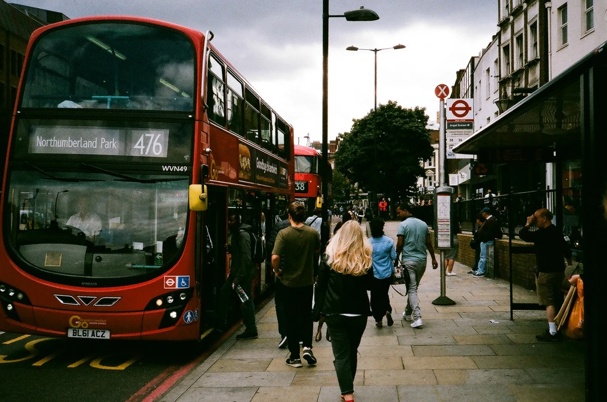
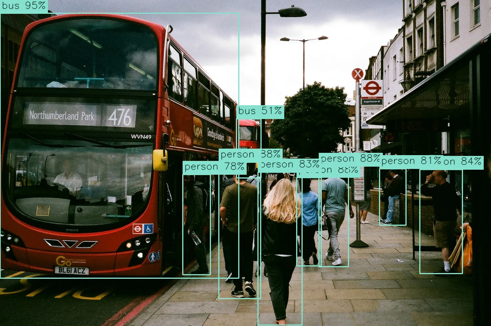
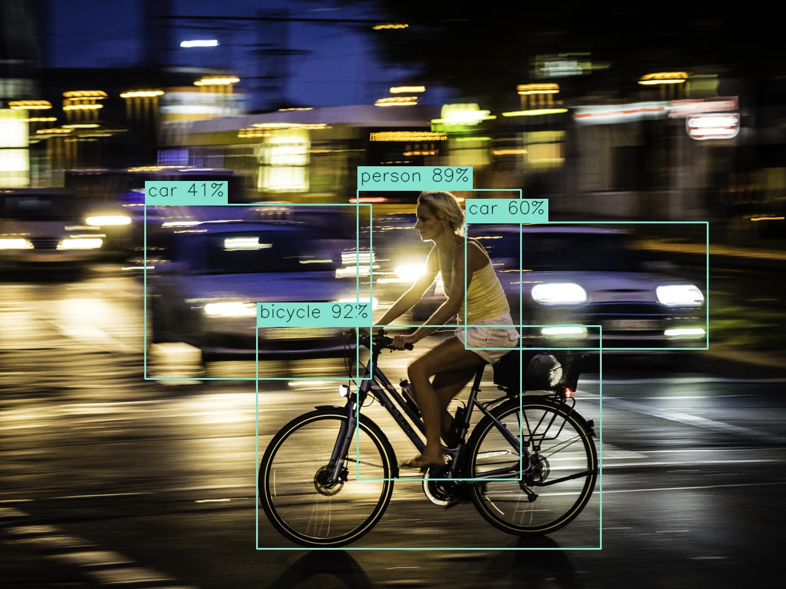

城市场景 公交与行人


摄影 Robert Lamb · CC BY-SA 2.0 · 图片经缩放，右图叠加模型预测框。
YOLO / ONNX
在同一个工作台导入不同的 YOLO ONNX 模型，使用带标注的图片完成离线评测。从模型接入到结果可视化与报告导出，覆盖完整评测流程。
批量图片评测
识别率、场景数、鲁棒性和泛化性依赖对应标注、场景字段或数据划分。固定验证集另提供 mAP@0.50 和逐类别明细。
YOLO26n · COCO · 置信度 ≥ 0.35
以下两组公开街景素材展示工作台如何标出目标位置、类别和置信度。工作台也可输出带框视频与逐帧检测记录。


摄影 Robert Lamb · CC BY-SA 2.0 · 图片经缩放，右图叠加模型预测框。

摄影 Sascha Kohlmann · CC BY-SA 2.0 · 图片经缩放，右图叠加模型预测框。